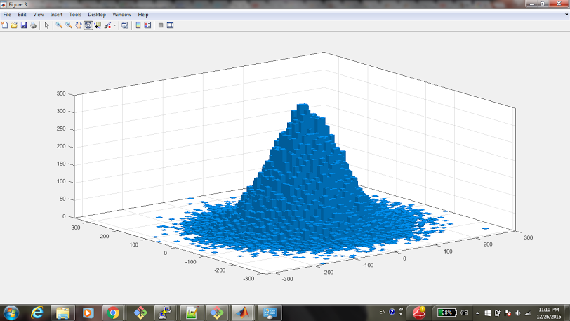

These python programs do a random walk and record the ending values in a .csv file.
After histogramming this data in Matlab, you get pretty output like this that shows the distribution, which is a gaussian/bell curve distribution. 